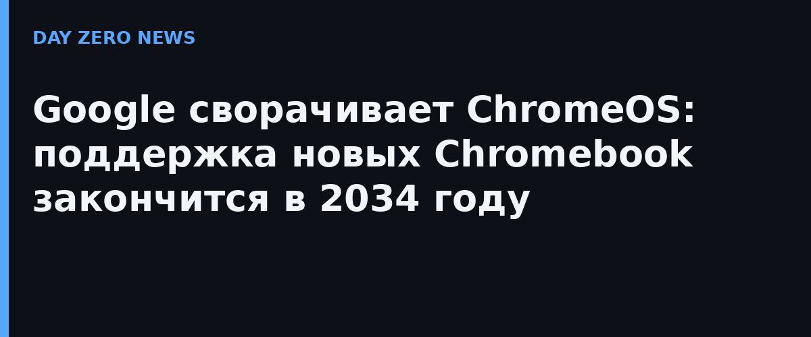

DAY ZERO NEWS
Google сворачивает ChromeOS: поддержка новых Chromebook закончится в 2034 году
29.09.2026 · по материалам первоисточника

Вместо обещанных 10 лет свежий Chromebook будет получать обновления 8 лет — Google пересаживает рынок на Googlebook OS с Gemini внутри.
Что случилось
Google обновила документ поддержки: для устройств, купленных сегодня, обновления закончатся в 2034 году — это 8 лет, а не десятилетний цикл, который компания анонсировала ранее. Причина — ставка на новое поколение Googlebook: более мощные ноутбуки с собственной Googlebook OS, куда встроена Gemini ИИ.
Кому это важно
Школы и парки устройств. Chromebook исторически взяли образование: дёшево, управляемо, без тяжёлой ОС. Флоты, купленные сейчас, потеряют поддержку раньше, чем рассчитывали закупщики.
Корпоративным ИТ. Обещанная «миграция на Googlebook OS» пока не существует:paths нет, список совместимых моделей — «позже».
Лицензии. Управление Googlebook OS потребует новой лицензии — старые ключи ChromeOS не переедут.
Что не так с обещаниями
Google пишет: «для многих устройств будут прямые пути миграции». На момент публикации путей нет ни для одной модели. Register отмечает: к 2034 году большинство сегодняшних Chromebook и так списуют — но вектор компании прозрачен: делать продолжение работы на Chromebook всё менее выгодным.